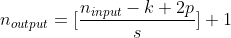
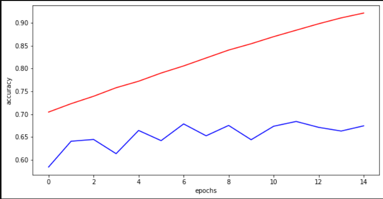
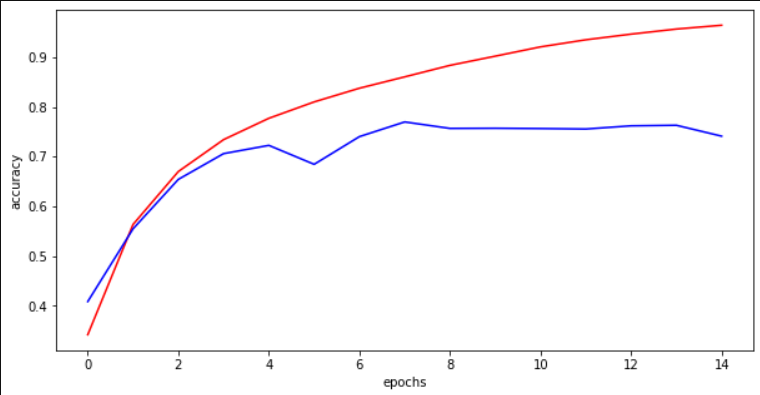

CIFAR-10 Image Classification - 88%
- Tech Stack: Python, PyTorch
- Notebook URL
This blog explains the extensive contribution made on PyTorch Trainning a classifier
tutorial which in essence shows how to train a CNN using pytorch on CIFAR-10 dataset. The model defined in this tutoial has been taken as a base model.
My Contribution
The base model will achieve a score of about 50%. In order to reach high score it took rigorous testing, model analysis, data augmentation, hyperparameter tuning and 15 cups of coffee.About CIFAR-10 Dataset
The CIFAR-10 dataset consists of 60000 32×32 colour images in 10 classes, with 6000 images per class. There are 50000 training images and 10000 test images. The dataset is divided into five training batches and one test batch, each with 10000 images. The test batch contains exactly 1000 randomly-selected images from each class. The training batches contain the remaining images in random order, but some training batches may contain more images from one class than another. Between them, the training batches contain exactly 5000 images from each class.What is Convolution neural network (CNN) ?
In neural networks, Convolutional neural network (ConvNets or CNNs) is one of the main categories to do images recognition, images classifications. Objects detections, recognition faces etc., are some of the areas where CNNs are widely used. CNN image classifications takes an input image, process it and classify it under certain categories (Eg., Dog, Cat, Tiger, Lion). Computers sees an input image as array of pixels and it depends on the image resolution. Based on the image resolution, it will see h x w x d( h = Height, w = Width, d = Dimension ). Eg., An image of 6 x 6 x 3 array of matrix of RGB (3 refers to RGB values) and an image of 4 x 4 x 1 array of matrix of grayscale image.
Experiment and Results
- Optimizer: Adam and SGD
- Loss: CrossEntropy
- GPU: NVIDIA GTX 1050 Ti 4GB
| Name | Models | Epoch | Batch Size | Learning Rate | Test accuracy | Time per epoch |
|---|---|---|---|---|---|---|
| NA | 2 Layers - Base Model | 2 | 4 | 0.01 | 50% | - |
| 2 | 2 Layers | 15 | 16 | 0.01 | 75% | 25 Seconds |
| 2A | 2 Layers with no Dropout Regularization | 15 | 16 | 0.01 | 63% | 21 Seconds |
| 3A | 3 Layers with Kernal Size 3 | 15 | 16 | 0.01 | 79% | 30 Seconds |
| 3B | 3 Layers with Kernal Size 5 | 15 | 16 | 0.01 | 74% | 39 Seconds |
| 3C | 3 Layers with Kernal Size 3 | 20 | 16 | 0.001 | 78% | 35 Seconds |
| 4A | 4 Layers with Kernal Size 3 | 15 | 32 | 0.001 | 83.4% | 86 Seconds |
| 4A | 4 Layers with Kernal Size 3 Data Augmented | 20 | 64 | 0.001 | 85% | 86 Seconds |
| 4A | 4 Layers with Kernal Size 3 and Data Augmented | 6 | 128 | 0.001 | 88% | 81 Seconds |
| 4A | 4 Layers with Kernal Size 3 Data Augmented | 15 | 256 | 0.001 | 86.7% | 77 Seconds |
| 4A | 4 Layers with Kernal Size 3 Data Augmented | 15 | 512 | 0.001 | 86% | 81 Seconds |
Challenges Faced
- There were case when training loss would return nan when I defined a model and stored it on the GPU when there was already another model trained on the GPU. This was fixed when I restarted the kernal.
- Having to wait for long time to see the model results after changing the hyperparameter everytime.
- Experienced overfitting when training model for larger epochs and complex neural nets
- Lr=[0.1, 0.0001] are not the best choice. 0.0001 overfits the model and 0.1 does not reduce the loss
- Significant improvement in model performance after switching to Adam optimizer from SGD
- Keeping track of different experiments without cluttering the notbook was difficult.
Learnings
- Calculating the output size of a convolution layer
p = padding
s = stride
k = kernal size
n_input = input size
 - Dropout: Dropout is a regularization method that approximates training a large number of neural networks with different architectures in parallel. During training, some number of layer outputs are randomly ignored or “dropped out.” This has the effect of making the layer look-like and be treated-like a layer with a different number of nodes and connectivity to the prior layer. In effect, each update to a layer during training is performed with a different “view” of the configured layer.
- Batch Normalization: It is a technique for training very deep neural networks that standardizes the inputs to a layer for each mini-batch. This has the effect of stabilizing the learning process and dramatically reducing the number of training epochs required to train deep networks.
- When retraining the model with different hyperparameters the accuracy would lock at 1% and the loss would'nt decrese. After a cup of coffee I was able to understand that this was due to model weights not getting reset before training again.
- Since I had to train and analyze multiple models. I defined a fit function that takes in epochs, learning rate and the model as parameters. This made the Notebook clean and easy to keep track of the model's performance.
- As an amateure user of TensorFlow that has inbuilt metrics calculation with the fit function, in pytorch it was not available. Hence, I learnt how to write my own code that returns metrics after every epoch.
- I was tuning various hyperparameters and I was not able to get my accuracy past 81% on my test dataset. Until late towards the end when I decided to try different batch size I started unlocking the potential of what my neural net can do. It reached a whopping 88% accuracy. From this experiment I learnt that the batch size plays a significant role in controlling the model while training.
Batch Size
It is one of the most important hyperparameter to tune in deep learning Systems. One must try to use larger batch size to train their neural network as it allows extracting more features. However, on the flipside larger batch size poor generalization. A batch size of 16 means that 16 samples from the entire training dataset will be used to estimate the error gradient before the model weights are updated.Effect of smaller batch size
Base Model
Test accuracy: 50%
class Net(nn.Module):
def __init__(self):
super(Net, self).__init__()
self.conv1 = nn.Conv2d(3, 6, 5)
self.pool = nn.MaxPool2d(2, 2)
self.conv2 = nn.Conv2d(6, 16, 5)
self.fc1 = nn.Linear(16 * 5 * 5, 120)
self.fc2 = nn.Linear(120, 84)
self.fc3 = nn.Linear(84, 10)
def forward(self, x):
x = self.pool(F.relu(self.conv1(x)))
x = self.pool(F.relu(self.conv2(x)))
x = x.view(-1, 16 * 5 * 5)
x = F.relu(self.fc1(x))
x = F.relu(self.fc2(x))
x = self.fc3(x)
return x
net = Net()
Loading Dataset
This code block defines the key aspects how the dataset is split before training. I increased the batch size to 32 which essentianly help training faster. Additionaly I have created a validation set that contains 10% of the the training set. This helps us evaluate the model while training.
transform_train = transforms.Compose([transforms.RandomCrop(32, padding=4), transforms.RandomHorizontalFlip(),transforms.ToTensor(),
transforms.Normalize((0.4914, 0.4822, 0.4465), (0.2023, 0.1994, 0.2010))])
transform_test = transforms.Compose([transforms.ToTensor(), transforms.Normalize((0.4914, 0.4822, 0.4465), (0.2023, 0.1994, 0.2010))])
dataset = torchvision.datasets.CIFAR10(root='./data', train=True, download=True, transform=transform_train)
torch.manual_seed(43)
val_size = 5000
train_size = len(dataset) - val_size
trainset, validationset = torch.utils.data.random_split(dataset, [train_size, val_size])
trainloader = torch.utils.data.DataLoader(trainset, batch_size=256, shuffle=True, num_workers=2)
valloader = torch.utils.data.DataLoader(validationset, batch_size=256, shuffle=True, num_workers=2)
testset = torchvision.datasets.CIFAR10(root='./data', train=False, download=True, transform=transform_test)
testloader = torch.utils.data.DataLoader(testset, batch_size=256, shuffle=True, num_workers=2)
Train on GPU
In order to train the model on GPU we must store the tensors on GPU.
if torch.cuda.is_available():
device = torch.device("cuda:0")
print("Running on the GPU")
else:
device = torch.device("cpu")
print("Running on the CPU")
Model Fit Function
- Initalizes the loss and optimizer
- Model validation
- Model Test
def fit(epochs, model, learning_rate=0.01, w_decay=0.9, loss_func=nn.CrossEntropyLoss()):
running_train_loss = []
running_train_accuracy = []
running_test_accuracy = []
running_val_accuracy = []
running_val_loss = []
criterion = loss_func
optimizer = optim.Adam(model.parameters(), lr=learning_rate)
start = time.time()
for e in range(epochs): # training our model, put input according to every batch.
running_loss = 0.0
running_corrects = 0.0
end = 0.0
batch_loss = 0.0
for i, (inputs, labels) in enumerate(trainloader):
inputs = inputs.to(device) # input to device as our model is running in mentioned device.
labels = labels.to(device)
optimizer.zero_grad() #setting the initial gradient to 0
outputs = model(inputs)
loss = criterion(outputs, labels) # Calc loss after each batch i/p by comparing it to actual labels.
loss.backward() # backpropagating the loss
optimizer.step() # updating the weights and bias values for every single step.
end = time.time()
running_loss += outputs.shape[0] * loss.item()
batch_loss += loss.item()
if i > 0 and i % 500 == 0:
print('Train Epoch: {} [{}/{}\t({:.0f}%)]\tLoss: {:.3f}'.format(e+1, i * len(inputs), len(trainloader.dataset),
100. * i / len(trainloader), batch_loss / 500))
batch_loss = 0.0
_, preds = torch.max(outputs.data, 1) # taking the highest value of prediction.
running_corrects += torch.sum(preds == labels) # calculating te accuracy by taking the sum of all the correct predictions in a batch.
running_val_history = model_validate(model, loss_func)
epoch_loss = running_loss / len(trainloader.dataset) # loss per epoch
epoch_acc = running_corrects / len(trainloader.dataset) # accuracy per epoch
running_train_loss.append(epoch_loss) # appending for displaying
running_train_accuracy.append(epoch_acc) # appending for displaying
running_val_loss.append(running_val_history['val_loss'])
running_val_accuracy.append(running_val_history['val_acc'])
print('Epoch :', (e+1))
print('Training loss: {:.3f}, acc {:.3f}, Time: {:.3f} seconds'.format(epoch_loss, epoch_acc, end - start))
print('Validation loss: {:.3f}, acc {:.3f}'.format(running_val_history['val_loss'], running_val_history['val_acc']))
running_test_accuracy.append(model_test(model))
print('------------------------------------------------------')
start = time.time()
print("Training Completed")
return running_train_loss, running_train_accuracy, running_test_accuracy, running_val_loss, running_val_accuracy
Best Model - 4A
# model 4a_layers kernel size 5 and 3
class Model_4a(nn.Module):
def __init__(self):
super(Model_4a, self).__init__()
self.conv_layer = nn.Sequential(
# Conv Layer block 1
nn.Conv2d(in_channels=3, out_channels=32, kernel_size=3, padding=1),
nn.BatchNorm2d(32),
nn.ReLU(inplace=True),
nn.Conv2d(in_channels=32, out_channels=64, kernel_size=3, padding=1),
nn.ReLU(inplace=True),
nn.MaxPool2d(kernel_size=2), # output: 64 x 16 x 16
# Conv Layer block 2
nn.Conv2d(in_channels=64, out_channels=1024, kernel_size=3, padding=1),
nn.BatchNorm2d(1024),
nn.ReLU(inplace=True),
nn.Conv2d(in_channels=1024, out_channels=1024, kernel_size=3, padding=1),
nn.ReLU(inplace=True),
nn.MaxPool2d(kernel_size=2), # output: 1024 x 8 x 8
nn.Dropout2d(p=0.05),
# Conv Layer block 3
nn.Conv2d(in_channels=1024, out_channels=512, kernel_size=3, padding=1),
nn.BatchNorm2d(512),
nn.ReLU(inplace=True),
nn.Conv2d(in_channels=512, out_channels=512, kernel_size=3, padding=1),
nn.ReLU(inplace=True),
nn.MaxPool2d(kernel_size=3), # output: 1024 x 4 x 4
# Conv Layer block 4
nn.Conv2d(in_channels=512, out_channels=512, kernel_size=3, padding=1),
nn.BatchNorm2d(512),
nn.ReLU(inplace=True),
nn.Conv2d(in_channels=512, out_channels=128, kernel_size=3, padding=1),
nn.ReLU(inplace=True), # output: 128 x 2 x 2
)
self.fc_layer = nn.Sequential(
nn.Dropout(p=0.1),
nn.Linear(128*2*2, 512),
nn.ReLU(inplace=True),
nn.Dropout(p=0.1),
nn.Linear(512, 512),
nn.ReLU(inplace=True),
nn.Dropout(p=0.3),
nn.Linear(512, 10)
)
def forward(self, x):
"""Perform forward."""
# conv layers
x = self.conv_layer(x)
# flatten
x = x.view(x.size(0), -1)
# fc layer
x = self.fc_layer(x)
return x
layer_4a_model = Model_4a().to(device)
Training the Best model
loss_list_4a, acc_list_4a, test_acc_4a, val_loss_4a, val_acc_4a = fit(20, layer_4a_model, 0.001)
Output
Train Epoch: 1 [19200/45000 (43%)] Loss: 1.962
Train Epoch: 1 [38400/45000 (85%)] Loss: 1.658
Epoch : 1
Training loss: 1.756, acc 0.306, Time: 78.265 seconds
Validation loss: 1.492, acc 0.439
Test Accuracy: 0.449
------------------------------------------------------
Train Epoch: 2 [19200/45000 (43%)] Loss: 1.438
Train Epoch: 2 [38400/45000 (85%)] Loss: 1.240
Epoch : 2
Training loss: 1.307, acc 0.519, Time: 78.291 seconds
Validation loss: 1.133, acc 0.593
Test Accuracy: 0.593
------------------------------------------------------
Train Epoch: 3 [19200/45000 (43%)] Loss: 1.081
Train Epoch: 3 [38400/45000 (85%)] Loss: 0.969
Epoch : 3
Training loss: 1.005, acc 0.644, Time: 78.240 seconds
Validation loss: 0.918, acc 0.677
Test Accuracy: 0.682
------------------------------------------------------
Train Epoch: 4 [19200/45000 (43%)] Loss: 0.889
Train Epoch: 4 [38400/45000 (85%)] Loss: 0.821
Epoch : 4
Training loss: 0.842, acc 0.705, Time: 78.245 seconds
Validation loss: 0.790, acc 0.723
Test Accuracy: 0.721
------------------------------------------------------
Train Epoch: 5 [19200/45000 (43%)] Loss: 0.751
Train Epoch: 5 [38400/45000 (85%)] Loss: 0.713
Epoch : 5
Training loss: 0.715, acc 0.754, Time: 78.209 seconds
Validation loss: 0.760, acc 0.739
Test Accuracy: 0.746
------------------------------------------------------
Train Epoch: 6 [19200/45000 (43%)] Loss: 0.649
Train Epoch: 6 [38400/45000 (85%)] Loss: 0.609
Epoch : 6
Training loss: 0.616, acc 0.790, Time: 77.909 seconds
Validation loss: 0.625, acc 0.794
Test Accuracy: 0.793
------------------------------------------------------
Train Epoch: 7 [19200/45000 (43%)] Loss: 0.560
Train Epoch: 7 [38400/45000 (85%)] Loss: 0.523
Epoch : 7
Training loss: 0.538, acc 0.818, Time: 77.593 seconds
Validation loss: 0.580, acc 0.807
Test Accuracy: 0.810
------------------------------------------------------
Train Epoch: 8 [19200/45000 (43%)] Loss: 0.493
Train Epoch: 8 [38400/45000 (85%)] Loss: 0.486
Epoch : 8
Training loss: 0.485, acc 0.837, Time: 77.742 seconds
Validation loss: 0.536, acc 0.825
Test Accuracy: 0.826
------------------------------------------------------
Train Epoch: 9 [19200/45000 (43%)] Loss: 0.443
Train Epoch: 9 [38400/45000 (85%)] Loss: 0.437
Epoch : 9
Training loss: 0.433, acc 0.856, Time: 77.739 seconds
Validation loss: 0.481, acc 0.844
Test Accuracy: 0.834
------------------------------------------------------
Train Epoch: 10 [19200/45000 (43%)] Loss: 0.395
Train Epoch: 10 [38400/45000 (85%)] Loss: 0.398
Epoch : 10
Training loss: 0.393, acc 0.869, Time: 77.530 seconds
Validation loss: 0.481, acc 0.847
Test Accuracy: 0.836
------------------------------------------------------
Train Epoch: 11 [19200/45000 (43%)] Loss: 0.367
Train Epoch: 11 [38400/45000 (85%)] Loss: 0.354
Epoch : 11
Training loss: 0.359, acc 0.879, Time: 77.470 seconds
Validation loss: 0.458, acc 0.847
Test Accuracy: 0.847
------------------------------------------------------
Train Epoch: 12 [19200/45000 (43%)] Loss: 0.333
Train Epoch: 12 [38400/45000 (85%)] Loss: 0.333
Epoch : 12
Training loss: 0.330, acc 0.889, Time: 77.572 seconds
Validation loss: 0.465, acc 0.854
Test Accuracy: 0.849
------------------------------------------------------
Train Epoch: 13 [19200/45000 (43%)] Loss: 0.303
Train Epoch: 13 [38400/45000 (85%)] Loss: 0.306
Epoch : 13
Training loss: 0.305, acc 0.899, Time: 77.759 seconds
Validation loss: 0.457, acc 0.857
Test Accuracy: 0.849
------------------------------------------------------
Train Epoch: 14 [19200/45000 (43%)] Loss: 0.280
Train Epoch: 14 [38400/45000 (85%)] Loss: 0.287
Epoch : 14
Training loss: 0.282, acc 0.907, Time: 77.495 seconds
Validation loss: 0.426, acc 0.867
Test Accuracy: 0.861
------------------------------------------------------
Train Epoch: 15 [19200/45000 (43%)] Loss: 0.259
Train Epoch: 15 [38400/45000 (85%)] Loss: 0.259
Epoch : 15
Training loss: 0.256, acc 0.914, Time: 77.399 seconds
Validation loss: 0.414, acc 0.870
Test Accuracy: 0.860
------------------------------------------------------
Train Epoch: 16 [19200/45000 (43%)] Loss: 0.236
Train Epoch: 16 [38400/45000 (85%)] Loss: 0.232
Epoch : 16
Training loss: 0.233, acc 0.921, Time: 77.226 seconds
Validation loss: 0.425, acc 0.871
Test Accuracy: 0.864
------------------------------------------------------
Train Epoch: 17 [19200/45000 (43%)] Loss: 0.220
Train Epoch: 17 [38400/45000 (85%)] Loss: 0.213
Epoch : 17
Training loss: 0.214, acc 0.930, Time: 77.240 seconds
Validation loss: 0.411, acc 0.875
Test Accuracy: 0.866
------------------------------------------------------
Train Epoch: 18 [19200/45000 (43%)] Loss: 0.209
Train Epoch: 18 [38400/45000 (85%)] Loss: 0.213
Epoch : 18
Training loss: 0.209, acc 0.930, Time: 77.184 seconds
Validation loss: 0.432, acc 0.870
Test Accuracy: 0.866
------------------------------------------------------
Train Epoch: 19 [19200/45000 (43%)] Loss: 0.188
Train Epoch: 19 [38400/45000 (85%)] Loss: 0.193
Epoch : 19
Training loss: 0.191, acc 0.935, Time: 77.346 seconds
Validation loss: 0.408, acc 0.878
Test Accuracy: 0.876
------------------------------------------------------
Train Epoch: 20 [19200/45000 (43%)] Loss: 0.162
Train Epoch: 20 [38400/45000 (85%)] Loss: 0.177
Epoch : 20
Training loss: 0.171, acc 0.942, Time: 77.047 seconds
Validation loss: 0.429, acc 0.880
Test Accuracy: 0.867
------------------------------------------------------
Training Completed
Calculating Test Accuracy
print('Accuracy of the network on the 10000 test images: %d %%' % (100 * model_test(layer_4a_model)))
Test Accuracy: 0.880
Accuracy of the network on the 10000 test images: 88 %
Model Comparison based on Trianing Time
Inferences

Fig-4. Model 2A Overfitting

Fig-5. Model 3B Epoch 15, SGD Optimizer Batch Size 32
Milestones planned
In my opnion the best model is very complex as it has too many neurons and there is a possibility to reach high accuracy with a less complex model. I plan to do the following and update this blog soon- Train on different batch size and learning rate on a less complex neuarl network
- Generate visualization for different batch size vs accuracy
- Improve jupyter notebook for hyperparameter tuning
References
- https://towardsdatascience.com/deep-learning-with-cifar-10-image-classification-64ab92110d79
- https://paperswithcode.com/sota/image-classification-on-cifar-10
- https://discuss.pytorch.org/t/how-to-draw-loss-per-epoch/22333
- https://wandb.ai/authors/ayusht/reports/Implementing-and-Tracking-the-Performance-of-a-CNN-in-Pytorch-An-Example--VmlldzoxNjEyMDU
- https://medium.com/swlh/how-data-augmentation-improves-your-cnn-performance-an-experiment-in-pytorch-and-torchvision-e5fb36d038fb
- https://medium.com/@sergioalves94/deep-learning-in-pytorch-with-cifar-10-dataset-858b504a6b54
- https://www.javatpoint.com/pytorch-validation-of-neural-network-for-image-recognition
- https://medium.com/mini-distill/effect-of-batch-size-on-training-dynamics-21c14f7a716e
- https://medium.com/@RaghavPrabhu/understanding-of-convolutional-neural-network-cnn-deep-learning-99760835f148